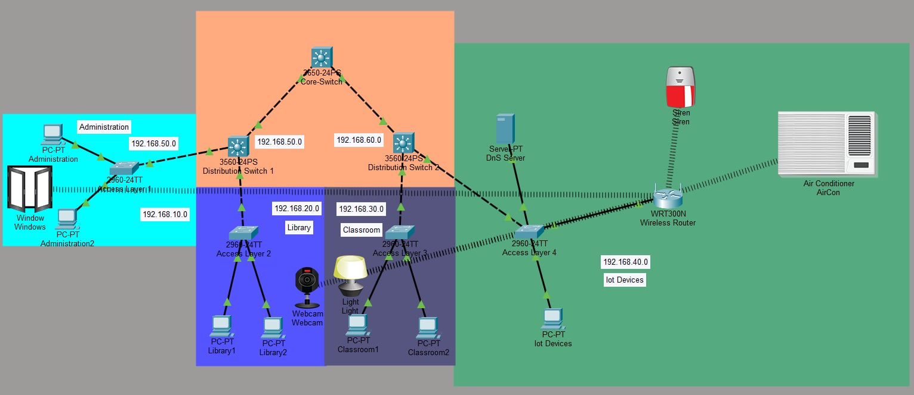

Enterprise campus network designed for a modern smart school environment supporting administrative systems, classrooms, laboratories, and IoT automation devices.

The Smart School Enterprise Network simulates the network infrastructure of a modern educational institution where multiple departments and services operate simultaneously. The network is designed using a hierarchical architecture that improves scalability, simplifies management, and ensures efficient traffic flow between different parts of the school.
At the core of the topology is the core switch, which functions as the central backbone of the network. This switch interconnects distribution switches that aggregate traffic from different departments including the administration office, library systems, classrooms, and IoT networks.
The distribution switches connect multiple access switches where end-user devices such as desktop computers, workstations, and monitoring systems are connected. This layered architecture ensures that the network can scale as the school grows without requiring major infrastructure redesign.
A wireless router is also integrated into the topology to support Internet of Things (IoT) devices deployed across the school environment. These devices include smart lighting systems, environmental monitoring devices, and automated safety alarms.
Integrating IoT into the enterprise network demonstrates how modern campus networks must support both traditional IT infrastructure and smart building technologies. This enables automation, improves energy efficiency, and enhances campus security through centralized monitoring systems.
Layer 3 switching enables communication between different network segments within the school infrastructure. This allows devices from different departments to exchange data while maintaining organized network segmentation.
Dynamic Host Configuration Protocol automatically assigns IP addresses to devices connecting to the network, simplifying network management and ensuring consistent addressing across the campus.
The DNS server provides internal name resolution so that devices and services within the school network can be accessed using domain names instead of IP addresses.
Rapid Spanning Tree Protocol prevents switching loops within the network by dynamically managing redundant links between switches, ensuring network stability and reliability.
Wireless connectivity enables mobile devices and IoT systems to connect to the school network without physical cabling.
IoT devices such as smart alarms, environmental sensors, and automated lighting systems are connected through the wireless infrastructure, enabling smart campus automation and centralized monitoring.